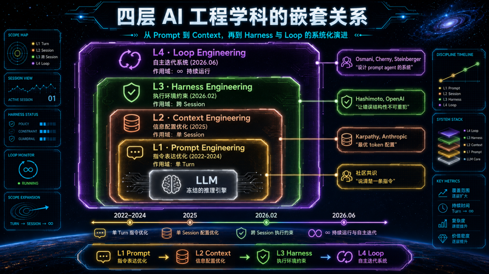
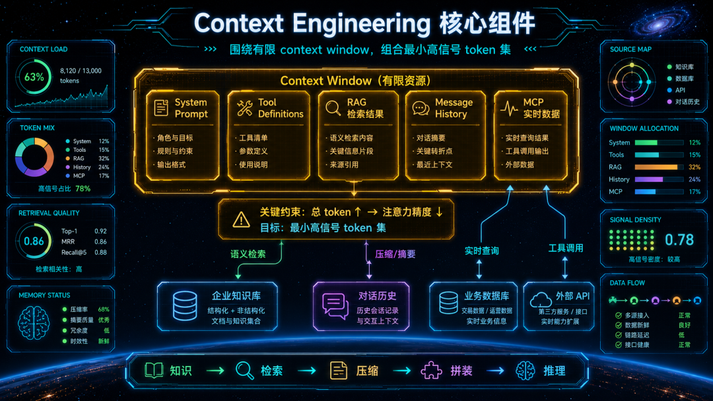
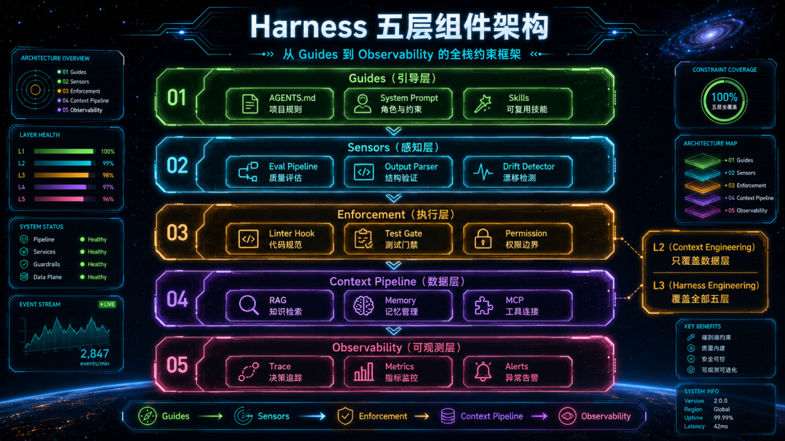
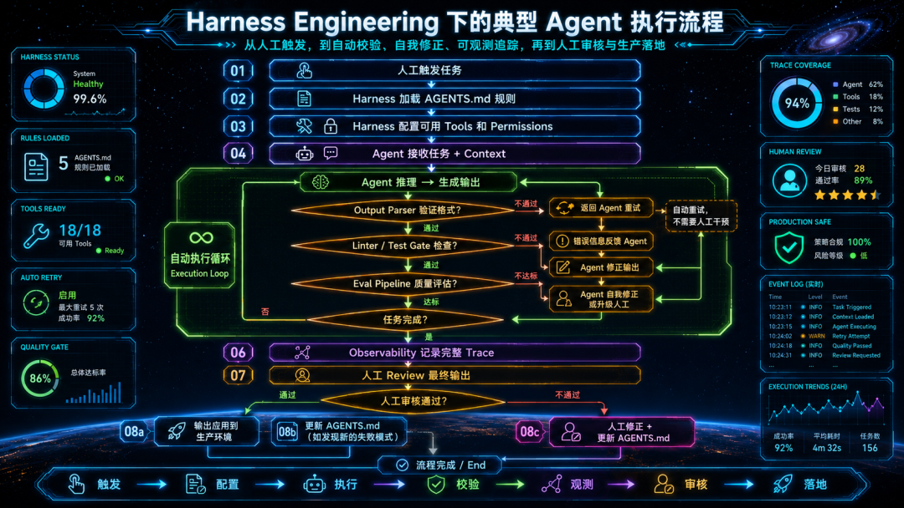
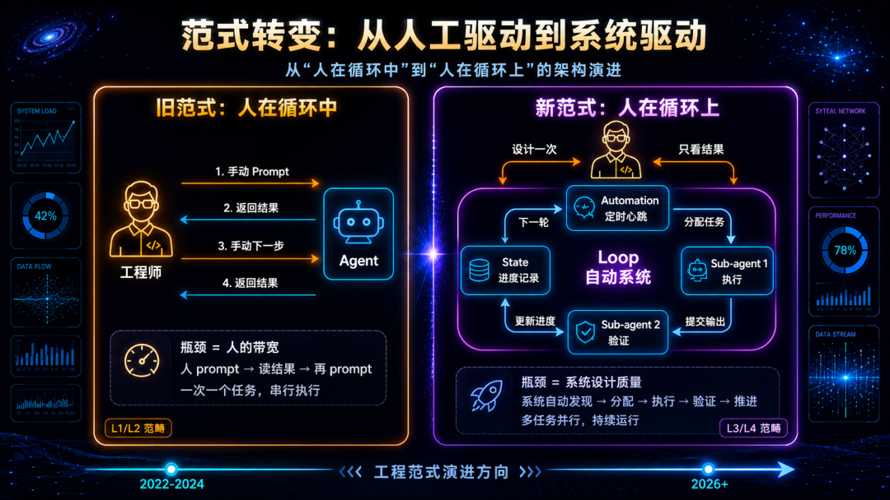
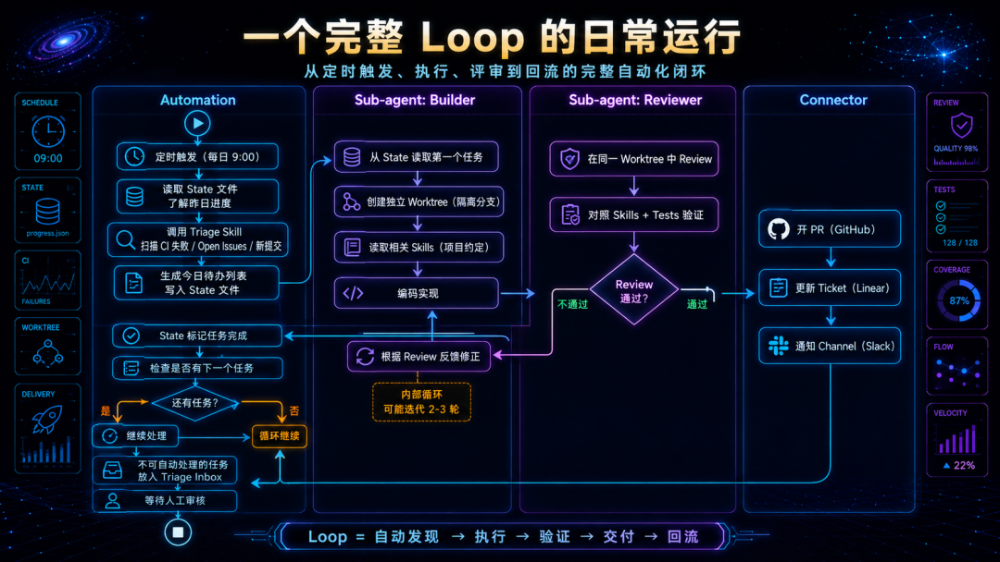
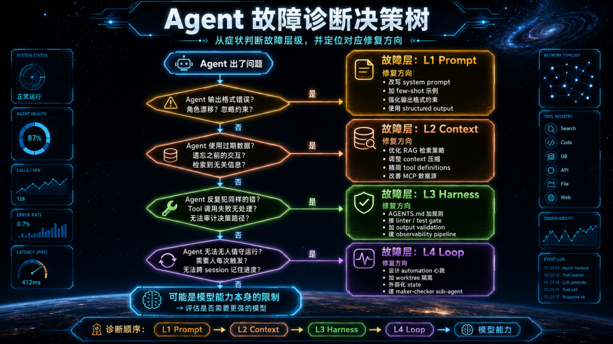
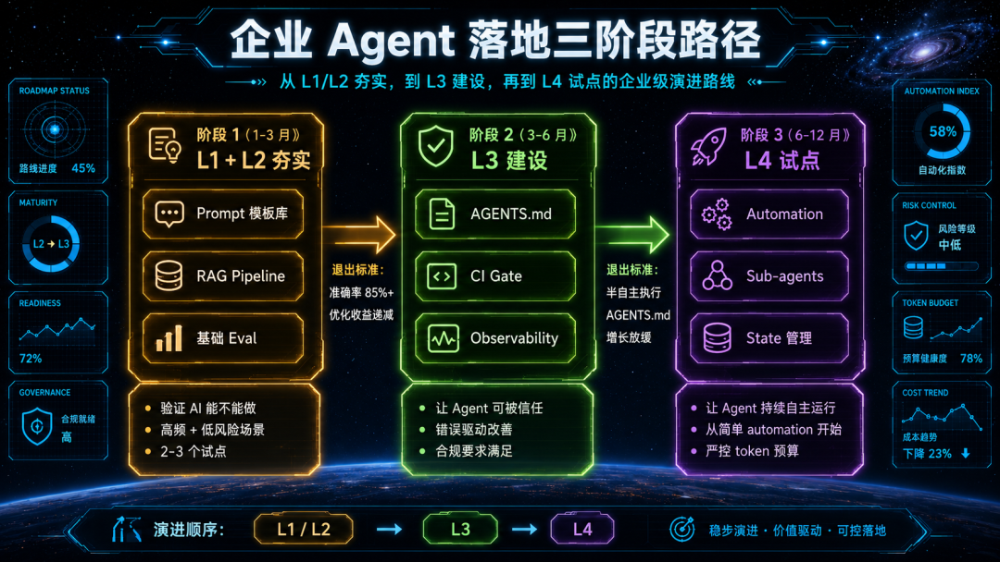

引言：为什么你的 Agent 在 Demo 里惊艳，在生产中拉胯？
2026 年，几乎每家企业都在谈 AI Agent。
团队花了三周搭了一个 Agent 原型，接入了内部知识库，看 Demo 效果像那么回事儿。然后呢？上线两周后，Agent 把客户的订单信息张冠李戴，把合同条款搞混，在凌晨三点自动发了一封莫名其妙的邮件。你手忙脚乱地关掉自动化，Agent 又变回了一个需要人盯着的聊天机器人。纯赛博嘉豪！
这个故事正在无数企业里反复上演。时至今日，模型智能早已不是问题，开源模型们的能力已经足够完成大多数企业任务。问题在于：技术团队在用 Demo 阶段的工程方法论，去解决生产阶段的系统问题。
过去四年，AI 工程领域范式迁移轮替了四遍。从 2022 年的 Prompt Engineering，到 2025 年的 Context Engineering，到 2026 年初的 Harness Engineering，再到 2026 年中的 Loop Engineering。
每一次演进到底是"新瓶装旧酒"的造词游戏，还是工程关注点的实质性跃迁？这个问题每个人都有自己的观点，但不可否认的，从 Prompt 到 Loop，改变早已在不经意间悄然发生。
Andrej Karpathy 在 2025 年说"prompt engineering 应该让位给 context engineering"。Mitchell Hashimoto（HashiCorp 联合创始人）在 2026 年 2 月提出"engineer the harness"。Boris Cherny（Anthropic Claude Code 负责人）在 2026 年 6 月说"我不再 prompt Claude 了，我设计循环来 prompt Claude"。
他们都遇到了同样的瓶颈：单靠改善 prompt 无法让 Agent 在生产环境中可靠运行；单靠优化 context 无法防止 Agent 犯同样的错；单靠搭好 harness 无法让 Agent 持续自主地完成复杂目标。每一层都解决了上一层留下的核心瓶颈，但也引入了新的工程挑战。
这篇文章将系统地拆解这四个工程层级，分析每一层对企业 Agent 落地的具体影响，并给出可操作的采纳路径。无论你是刚开始探索 AI Agent 的技术负责人，还是已经在生产环境中踩过坑的工程团队，这篇文章都会帮你建立一个清晰的该在哪个层级投入的判断框架。
01
在深入每一层之前，先建立一个关键认知：这四层是嵌套关系，不是替代关系。
很多团队的误区是把它们当作时间线上的换代：
现在都 2026 年了，还搞 Prompt Engineering？应该搞 Harness Engineering 了！
这种理解是错的。正确的关系是：
Context Engineering 包含 Prompt Engineering
Harness Engineering 包含 Context Engineering
Loop Engineering 包含 以上所有
外层不取消内层，而是在内层的基础上增加新的工程维度。如果你的 prompt 写得模糊、context 配置混乱，再好的 harness 也救不了你，因为模型每次推理时收到的指令和信息本身就是低质量的。
下面这张图展示了四层的嵌套关系和各自的作用域：

理解了嵌套关系，我们就可以逐层拆解每一层对企业 Agent 落地的影响了。
02
定义与核心问题
Prompt Engineering 是一切的起点。它关注的是：在模型已经拿到所有信息的前提下，如何用最有效的措辞引导模型产出期望行为。
核心问题只有一个：同样的信息，换一种说法，模型表现会不会更好？
具体技术手段包括：角色设定（"你是一位资深财务分析师"）、输出格式约束（"以 JSON 格式返回"）、Few-shot 示例（给 2-3 个输入输出样本）、Chain-of-Thought 引导（"让我们一步步思考"）、结构化 prompt 模板（使用 XML/Markdown 分区）。
对企业 Agent 的正面影响
Prompt Engineering 解决的是模型的"听话问题"。在企业场景中，这意味着：
输出格式可控。 企业系统需要结构化数据，比如 JSON、表格、特定模板的文本。好的 prompt 能让模型稳定输出可被下游系统解析的格式，而不是随意组织的自然语言。
角色边界清晰。 通过角色设定和行为约束，Agent 可以被限定在特定的业务领域内。你是客服助手，只回答产品相关问题，不确定的说我需要转接人工：这种边界设定在 L1 层就可以实现。
推理质量提升。 Chain-of-Thought 和 structured reasoning 让模型在复杂业务逻辑中保持条理。对于需要多步骤推理的场景（如合同条款分析、财务异常检测），CoT 能显著提升准确率。
企业落地的天花板
但 Prompt Engineering 有三个无法突破的天花板：
信息孤岛。 Prompt 只能优化"怎么问"，无法解决"模型不知道你的业务数据"的问题。比如电商场景，你在 prompt 里写"根据我们的退款政策"，但模型根本不知道你的退款政策是什么。每次人工粘贴上下文，不可规模化。
无记忆。 每个 turn 是独立的。上一轮的洞察、决策、中间状态全部丢失，除非人手动搬运。Agent 无法维持跨 turn 的连贯性。
人是瓶颈。 触发、判断、下一步决策全在人身上。Agent 的吞吐量等于人的带宽。一个人盯一个 Agent 手动交互，这是套了一层皮的人肉自动化。
企业成熟度定位
个人生产力工具，不是组织基础设施。 L1 适合验证"AI 能不能做这件事"，不适合回答"AI 能不能替我们持续做这件事"。
大多数企业在这一层停留太久了。他们花大量时间优化 prompt 模板、建 prompt 库、做 prompt 版本管理——这些都有价值，但如果止步于此，Agent 永远无法从"一个更好用的聊天窗口"进化为"一个可信赖的业务流程节点"。
你的瓶颈不再是"怎么问"的问题时，就该迈向 L2 了。
03
定义与核心问题
2025 年 6 月，Andrej Karpathy 在 X 上发了一条简短的帖子，大意是"比起 prompt engineering，我更支持 context engineering 这个说法"。这条帖子引发了整个行业的范式转移讨论。
三个月后，Anthropic 发布了《Effective Context Engineering for AI Agents》这篇工程博客，给出了正式定义：Context engineering 是策划和维护最优 token 集（信息）的策略集，包括 prompt 之外落入 context 的所有其他信息。
核心问题从"怎么说"变成了：什么样的 token 配置，最可能触发模型的期望行为？
"Token 配置"这个词很关键。它意味着 context engineering 不只是"多给模型一些信息"，而是系统性地设计一个信息策略：什么放进去、什么不放、放多少、以什么顺序放、什么时候放。因为 context window 是有限资源，Anthropic 的研究表明，即便模型声称支持 200K token 的上下文，随着 token 数量增加，模型对信息的召回准确率会下降，这被称为"Context Rot"（上下文腐烂）。
技术手段
Context Engineering 在企业场景中的具体实现手段包括：

RAG（检索增强生成）。 不把整个知识库塞给模型，而是根据用户查询，语义检索最相关的文档片段，只把这些片段放入 context。企业场景中，这意味着 Agent 可以回答关于内部流程、产品手册、合同条款的问题，而不需要对模型做微调。
MCP（Model Context Protocol）。 Anthropic 主导的协议标准，让 Agent 通过统一接口连接外部数据源和工具。企业的 CRM、ERP、项目管理工具都可以通过 MCP 接入，Agent 在推理时实时拉取最新数据。
Message History 管理。 长对话中，早期消息的价值递减。Context engineering 通过滑窗（只保留最近 N 轮）、摘要压缩（把 20 轮对话压缩成 3 段摘要）、优先级排序（关键决策记录保留，闲聊丢弃）来维持 context 质量。
Tool Schema 精简。 每个 tool definition 都占 context 空间。如果你给 Agent 接了 50 个工具，光是工具定义就吃掉了几千 token。Context engineering 要求只暴露当前任务需要的工具子集。
对企业 Agent 的正面影响
Agent 从"通用对话"变成"业务助手"。 接入了企业知识库和业务系统后，Agent 的回答不再是通用常识，而是基于你的具体业务数据的有依据回答。这是企业 Agent 真正创造价值的起点。
Token 效率直接影响成本。 企业按 token 付费。Context engineering 的"最小高信号 token 集"原则直接对应 cost reduction。一个优化过的 RAG pipeline 可能把每次查询的 context 从 8K token 降到 3K token——在月均 10 万次查询的规模下，这是数千美元的差异。
单 session 内的连贯性得到保障。 通过有效的 message history 管理，Agent 在一个长对话中可以"记住"之前讨论的内容，而不会在第 15 轮突然忘了第 3 轮的决策。
企业落地的天花板
模型的"手"不受控。 Context engineering 管的是模型的 input side——模型看到什么。但模型看到正确信息后，可能仍然做出错误的行动：调用了错误的 API 端点、生成了不合规的代码、做了违反业务规则的决策。你把编码规范放进了 context，模型读了，但它选择性忽略了某条规则——L2 对此无能为力。
错误不会自愈。 Agent 在第 3 轮犯了一个错误（比如 RAG 检索到了过期文档），L2 没有机制发现和纠正它。没有 linter 拦截、没有 test gate 验证、没有 feedback loop 把错误转化为系统改进。同样的错误会在下次遇到相似查询时再次出现。
仍然依赖人触发和人判断。 Context 让 agent 在单次任务中更准确，但"做什么任务"和"结果是否可接受"仍然由人来决定和触发。Agent 是一个更聪明的工具，但仍然需要人来握着它。
企业成熟度定位
业务助手阶段。 Agent 能基于企业数据做出有依据的回答和建议，但每次任务仍需人工启动和验收。典型场景：客服知识库问答、代码补全 with 项目上下文、文档生成 with 数据检索、内部政策查询。
当你的 Agent 反复犯同样的错，而你只能通过改 prompt 或调 RAG 来"希望"它不再犯时——你需要 L3 了。
04
定义与核心问题
2026 年 2 月 5 日，Mitchell Hashimoto 发布了一篇博客，描述了一个他在使用 AI agent 时养成的习惯：每次 agent 犯错，他都会工程化一个解决方案，让 agent 再也不会犯同样的错。 他把这个实践叫做 "engineer the harness"。
六天后，OpenAI 发布了《Harness Engineering: Leveraging Codex in an Agent-First World》，描述了一个 3-7 人小团队如何在五个月内，用 Codex agent 构建了约一百万行代码——零行手写代码。核心发现是："Early progress was slower than we expected, not because Codex was incapable, but because the environment was underspecified." 不是模型不行，是环境没配好。
LangChain 用一个公式做了最简洁的凝练：Agent = Model + Harness。
核心问题从"模型看到什么"变成了：如何构建一个让错误结构性不可重犯的执行环境？
Harness 包含什么
Harness 是模型之外的一切基础设施。它有五个核心组件：

Guides（引导）： AGENTS.md 或 CLAUDE.md 文件，编码了项目的规则、约定、禁忌。不同于 prompt 里的"请遵守编码规范"（概率性遵守），AGENTS.md 的每一行都对应一个曾经的失败模式——它是错误经验的结构化沉淀。
Sensors（感知）： Output parser 验证输出格式、eval pipeline 评估输出质量、drift detector 检测 Agent 行为是否偏离预期。这些不是 Agent 自己的能力，而是 harness 提供的外部检查机制。
Enforcement（执行约束）： Linter 在 Agent 生成不合规代码时阻止提交，test gate 在测试不通过时阻止合并，permission 系统限制 Agent 能访问的资源和能执行的操作。确定性约束替代概率性遵守——这是 L3 与 L2 的本质区别。
Context Pipeline（数据管线）： 这就是 L2 的 context engineering，但在 L3 中它被 harness 的其他组件治理——什么时候加载什么 context，由 harness 的编排逻辑控制，而不是静态配置。
Observability（可观测性）： 记录每个 turn 的完整 trace——input、output、tool calls、token count、latency、决策原因。对合规要求高的行业（金融、医疗、法律），这不是可选项而是硬性前提。
L2 与 L3 的本质区别
这一点非常重要，值得单独展开。
L2（Context Engineering）的思路是：给模型看正确的信息，期望它做出正确的行为。 这是一种基于信任的策略——你信任模型在看到正确信息后会做正确的事。
L3（Harness Engineering）的思路是：不管模型看到了什么，在它的输出被应用到真实环境之前，必须通过外部检查。 这是一种基于验证的策略——你不信任模型的任何单次输出，你信任的是验证流程。
用一个类比：L2 是给考生发了正确的教材（期望他考好），L3 是设置了阅卷系统和作弊检测（不管他用什么教材，答案必须过审）。
Hashimoto 的原始描述最生动：在 prompt 里写"请遵守编码规范"是 L1/L2 的做法；在 CI pipeline 里接一个 linter，Agent 违反规范时 PR 直接无法合并——这是 L3 的做法。前者是"请你遵守"，后者是"你不遵守就过不了"。
对企业 Agent 的正面影响
从"希望正确"到"验证正确"。 这是企业 Agent 从 PoC 到 production 的关键跨越。Demo 阶段你可以容忍 Agent 偶尔犯错，生产环境不行。Harness 把 Agent 的输出从"概率性正确"变成"可验证的正确"（至少在可形式化验证的维度上）。
错误驱动的持续改善。 AGENTS.md 的增长模式是：Agent 犯了一个新类型的错误 → 你分析根因 → 你在 AGENTS.md 里加一条规则或在 CI 里加一个 check → 这个错误不再出现。系统的可靠性随时间单调递增。这是一个工程学的正循环，而不是依赖运气。
半自主执行释放人力。 有了约束和验证，Agent 可以在一定范围内自主执行，人从"每步都参与"退到"任务完成后 review"。这释放了巨大的人力带宽。一个工程师可以同时监督 3-5 个 Agent 处理不同任务，而不是盯着一个 Agent 的每次输出。
可审计的决策链满足合规要求。 对于金融风控、医疗辅助、法律文书等场景，"AI 为什么做出这个决策"不是好奇心而是法律要求。Observability pipeline 提供的完整 trace 是满足这类合规要求的基础。
企业落地的天花板
仍然是人触发、人收尾。 Harness 保障的是"给 Agent 一个任务，它可靠地完成"。但谁来决定"做什么任务"、"任务的优先级"、"任务之间的依赖关系"——仍然是人。每天早上，你得人工检查 issue 列表，手动把任务分配给 Agent，等它完成后手动 review。
无跨 session 记忆。 Harness 在一个 task session 内有效。但 session 结束后，Agent 忘记一切。明天它不知道昨天做了什么、什么还没完成、下一步应该是什么。
不能并行规模化。 你想同时运行 5 个 Agent 处理 5 个不同的 issue——harness 本身不提供并行隔离和编排能力。
企业成熟度定位
可靠执行阶段。 Agent 可以被信任独立完成明确定义的任务。这是 2026 年大多数企业应该全力投入的层级——L3 做扎实比急于跳到 L4 更有价值，因为没有可靠的单任务执行，多任务自动化只会把不可靠放大到系统级。
下面这张流程图展示了一个典型的 L3 Agent 执行流程：

当你希望 Agent 不再等你每天早上来分配任务，而是自己发现工作、自己推进——你需要 L4 了。
05
定义与核心问题
2026 年 6 月 8 日，Google Chrome 团队的 Addy Osmani 发表了一篇文章，文章开头引用了两段话：
Peter Steinberger 说："你不应该再 prompt coding agent 了。你应该设计循环来 prompt 你的 agent。"
Boris Cherny（Anthropic Claude Code 负责人）说："我不再 prompt Claude 了。我有循环在运行，这些循环 prompt Claude 并决定要做什么。我的工作是写循环。"
这就是 Loop Engineering 的核心命题：你不再是那个 prompt Agent 的人，你成为了设计那个 prompt Agent 的系统的人。

Loop 的六个构成要素
Osmani 的分析揭示了一个重要观察：Codex（OpenAI）和 Claude Code（Anthropic）这两个竞品已经独立收敛到了几乎相同的 Loop 架构。这不是巧合，而是 coding agent 用例下的自然均衡态。
Loop 需要五个原语加一个状态存储：
Automations（自动化心跳）。 这是让 Loop 成为 Loop 而不是"你执行了一次"的关键。定时触发（每天早上）或事件触发（CI 失败时）自动运行 Agent 进行发现和分类。Codex 有 Automations tab，Claude Code 有
/loop、/goal、hooks、GitHub Actions。Worktrees（工作树隔离）。 多个 Agent 同时在同一个 repo 上工作时，如果不做隔离，文件冲突会让一切崩溃。Git worktree 为每个 Agent 创建独立的工作目录和分支，共享仓库历史但互不干扰编辑。
Skills（技能编码）。 把项目的约定、构建步骤、"我们不这么做因为那次事故"写成可复用的 SKILL.md 文件。Agent 每次运行时读取 skill，而不是从零猜测你的项目习惯。这消除了"意图负债"（Intent Debt）——Agent 冷启动时会用自信的猜测填补你没说的部分，skill 把这些猜测替换为确定的规则。
Plugins / Connectors（插件/连接器）。 基于 MCP 协议，让 Agent 能读 issue tracker、查数据库、调 staging API、发 Slack 消息。没有 connector 的 Loop 只能看文件系统——有了 connector 的 Loop 能在你的真实工作环境中行动。
Sub-agents（子 Agent）。 最关键的结构模式：写的人和查的人分开。生成代码的 Agent 不给自己打分——另一个 Agent（不同指令，可能不同模型）做 review。这种 maker-checker 分离是 Loop 能在你不在场时运行的信任基础。
State（外部状态）。 Markdown 文件、Linear board、或任何存活在 context window 之外的持久化存储。记录什么做完了、什么在进行、什么是下一步。Agent 在 session 间会忘记一切，但 repo 不会——state 文件是 Loop 跨 run 连续性的唯一保障。

对企业 Agent 的正面影响
从"一次一任务"到"持续运转"。 Automation + State 让 Agent 能跨 session 工作。你周五下班前设计好 Loop，周一回来看结果——期间 Agent 一直在发现、执行、验证、推进。
从"串行"到"并行"。 Worktree 隔离让多个 Agent 同时工作。Boris Cherny 描述的"一天合并 20-30 个 PR"不是一个 Agent 做了 30 次，而是多个 Agent 并行处理不同任务的结果。
知识复利。 Skill 把项目知识编码化后，每次 Loop run 都从相同的知识基线出发，而不是每次冷启动都重新猜测。这产生复利效应——skill 越完善，Agent 的首次正确率越高，需要的迭代轮数越少，token 成本越低。
内部制衡。 Maker-checker 分离不只是质量保障，它改变了 Loop 的信任模型。你不需要信任任何单个 Agent 的输出——你信任的是验证流程。这让"无人值守运行"从冒险变成了可管理的风险。
L4 引入的新风险
这是需要诚实面对的部分。Loop Engineering 在提升自主性的同时，引入了三个在 L3 不存在的新风险：
风险 1：成本可预测性大幅下降。
L3 的成本模型简单：一个任务 × 一次执行 × 大约 N 个 turn ≈ 可预算的 token 消耗。
L4 的成本是组合爆炸：Automation 每天跑 × 每次可能 spawn M 个 sub-agent × 每个 sub-agent 各自有迭代循环 × 每个 skill 调用和 tool call 都消耗额外 token。如果不做预算控制，一个设计不当的 Loop 可能一晚上烧掉你一个月的 token 预算。
对于"token 丰富"（大预算）的团队和"token 贫困"（有限预算）的团队，Loop 的策略完全不同。前者可以让 Loop 自由探索，后者必须严格限制 automation 频率、sub-agent 数量、每次迭代的 token 上限。
风险 2：可靠性的新风险面。
L3 的可靠性目标是"单任务内 Agent 不犯错"。L4 的可靠性要求变成了"一个无人值守系统在多任务、多 Agent、多 session 的组合空间内不出问题"——这是一个数量级更难的问题。
具体包括：
Triage 逻辑错误可能把高优先级 issue 分类为低优先级，导致重要问题被忽略
Sub-agent 之间的依赖可能产生死锁或循环依赖
State 文件损坏或不一致可能导致任务重复执行或遗漏
Maker-checker 都使用同一个模型时，系统性偏差不会被捕获
风险 3：Comprehension Debt（理解力负债）和 Cognitive Surrender（认知投降）。
这是 Osmani 在文章中专门警告的：Loop 越快产出你没写的代码，你对 codebase 的理解缺口越大。这个缺口不会在任何指标上报警，直到你需要 debug 一个跨越多个 Loop 生成模块的问题。
更危险的是 Cognitive Surrender——当 Loop 运行顺畅时，人倾向于停止审查、停止质疑、停止思考。Osmani 的原话："同样的操作，相反的结果"——用判断力设计 Loop 是加速器，用 Loop 来逃避思考是灾难。
企业成熟度定位
自主运营阶段。 只有在 L3 扎实的基础上才应该尝试 L4。如果你的 Harness 还不能保证单任务可靠执行，加上 Loop 只会把不可靠放大到系统级。
06
理解了四层的职责后，最大的实操价值是建立一个故障诊断框架。当企业 Agent 在生产中出问题时，不要急着改 prompt 或换模型——先判断故障在哪一层，再施加对应层的修复。
大量实践表明：2025-2026 年大多数生产级 Agent 的故障是 harness 层故障，被误诊为 prompt 或 context 层故障。修复施加在错误的层面，症状反复出现，团队对 Agent 失去信心。

来看几个真实企业场景的诊断示例：
场景 1：客服 Agent 总是把退款政策搞错。
初始诊断："prompt 写得不够清楚"→ 花了两周优化 prompt 模板 → 问题依然出现。
正确诊断：L2 层故障。RAG pipeline 检索到了过期的退款政策文档（去年修订的旧版本仍在知识库中）。修复不是改 prompt，而是加一个文档版本管理机制，确保 RAG 只检索最新版本。
场景 2：代码生成 Agent 总是用已废弃的 API。
初始诊断："context 里没有给足够的 API 文档"→ 塞入了更多文档 → 问题偶尔减少但没消失。
正确诊断：L3 层故障。即使 context 里有正确的 API 文档，模型的训练数据中旧 API 的出现频率更高，导致它"习惯性"使用旧 API。修复不是加更多 context，而是在 CI pipeline 里加一个 deprecated API detector——Agent 如果使用了废弃 API，PR 直接被阻止。确定性约束 > 概率性引导。
场景 3：Agent 一天只能处理 5 个 issue，而积压有 50 个。
初始诊断："模型太慢"→ 换了更快的模型 → 吞吐量从 5 提升到 7，但 50 个积压还是处理不完。
正确诊断：L4 层瓶颈。不是模型慢，是人在串行驱动——每个 issue 都要人工触发、人工检查、人工推进到下一个。修复不是换模型，而是设计一个 Loop：automation 每天早上自动 triage 50 个 issue，把可自动处理的分给并行的 sub-agent（worktree 隔离），只把不能自动处理的放入人工 triage inbox。
07
理解了四层模型后，最后一个关键问题是：企业应该以什么顺序、什么节奏来采纳这四层？
答案不是"四层同时推进"，也不是"直接跳到最新的 Loop Engineering"。正确的策略是由内而外、逐层验证。
阶段 1：夯实 L1 + L2
目标：验证 "AI 能不能做这件事"。
选择 2-3 个高频、低风险的业务场景（客服问答、文档生成、代码补全），做好 prompt 模板 + RAG pipeline + context 管理。
具体动作：
为每个场景建立结构化的 prompt 模板，包含角色设定、输出格式、边界约束
搭建 RAG pipeline 接入内部知识库，验证检索准确率
接入 MCP 连接 1-2 个业务系统（如 CRM、工单系统）
建立基础的 eval 流程——对比 Agent 输出与人工标准答案，计算准确率
退出标准： Agent 在选定场景上的准确率达到 85%+，且团队对 prompt + context 的优化已经进入收益递减阶段（改来改去提升不大了）。这时候你的瓶颈已经不在 L1/L2 了。
阶段 2：建设 L3
目标：让 Agent 能被信任独立完成任务。
在验证过的场景上加 harness——从最简单的开始：
具体动作：
创建 AGENTS.md，把阶段 1 中发现的所有 Agent 失败模式编码为规则
在 CI pipeline 中接入 output validation（格式检查、业务规则检查）
对关键场景加 test gate——Agent 的输出必须通过自动化测试才能应用
搭建 observability pipeline——至少做到每次 Agent 执行的完整 trace 可查
建立 AGENTS.md 的持续更新机制：每次新的失败模式 → 分析根因 → 加规则
退出标准： Agent 在选定场景上可以半自主执行——人只需要做最终 review 而不是逐步监控。AGENTS.md 的增长速度放缓（说明常见失败模式已被覆盖）。

阶段 3：试点 L4
目标：验证无人值守运行的可行性和 ROI。
在 L3 最成熟的场景上试点 Loop——从最简单的 automation 开始。
具体动作：
选一个低风险、高频次的重复性任务（如每日 CI failure triage、代码风格修正、测试补全）
设计一个最小 Loop：automation（定时触发）+ 一个 builder sub-agent + 一个 reviewer sub-agent + state 文件
设置严格的 token budget 上限——每次 Loop run 不超过 X token
前两周保持高频人工 review（每次 Loop 输出都看），确认 Loop 行为符合预期
逐步降低 review 频率：每天 → 每两天 → 每周抽查
监控 comprehension debt：定期做 code walkthrough，确保团队仍然理解 Loop 生成的代码
退出标准： Loop 在试点场景上稳定运行 4 周+，人工 review 的否决率低于 10%，token 成本在预算范围内。此时可以考虑扩展 Loop 到更多场景。
关键 Anti-Pattern：跳过 L3 直接搞 L4
这是最常见也最危险的错误。一些团队看到"Boris Cherny 一天合并 30 个 PR"的故事，就想直接跳到 Loop Engineering。但他们忽略了一个关键前提：Cherny 是在 Anthropic 内部、使用自家模型、有完善的 harness 基础设施的情况下做到这一点的。
没有 L3 的 L4 意味着：你搭了一个自动运行的系统，但这个系统里的每个 Agent 都是不可靠的。它不会停下来等你修复——它会持续产出需要人工善后的结果。你以为自动化节省了时间，实际上人工善后的成本可能超过了手动执行的成本。净效率不是正的，是负的。
08
不同行业因为风险容忍度和合规要求的差异，在四层模型上的重心有所不同。
金融行业
金融行业的核心约束是合规可审计和零容错（一个错误的交易指令可能导致巨额损失）。
L1/L2 重心： 确保 Agent 只基于合规数据源做推理，context 中不混入未授权的信息
L3 是核心投入层： 需要最强的 harness——每个 Agent 输出必须通过合规检查器、风控模型、格式验证器的三重 gate。Observability 不是可选项而是监管要求。AGENTS.md 需要编码所有监管规则
L4 极度谨慎： 全自动化在高风险金融决策中可能不被监管允许。Loop 更适合用在辅助性任务（研报生成、数据清洗、异常预警）而非决策性任务
软件工程
软件工程是 Loop Engineering 的原生场景——上文提到的所有案例（Codex、Claude Code）都来自这个领域。
L1/L2 快速通过： 模型对代码的理解已经足够强，context engineering 的主要工作是接入项目的 codebase、文档、测试
L3 是基础： Linter、test suite、CI pipeline 本身就是 harness 的天然组件。软件工程团队的优势是他们已经有丰富的自动化验证基础设施
L4 是当前热点： 这是最适合 Loop Engineering 的行业，因为代码有明确的验证手段（编译通过、测试通过、lint 通过），maker-checker 分离有坚实的自动化基础
客户服务
客服场景的特殊性在于与真实用户直接交互，错误的代价是客户体验和品牌信誉。
L1/L2 是核心： 客服 Agent 的质量高度依赖 prompt 的边界设定（什么问题回答、什么问题转人工）和 context 的准确性（RAG 检索到正确的产品信息和政策）
L3 重要但侧重不同： 客服场景的 harness 更关注 content safety（不能说不该说的话）、tone consistency（语气一致）、escalation logic（何时转人工）
L4 适用有限： 客服的本质是响应式的（客户提问才回答），不太适合 Loop 的主动发现模式。但可以用于辅助场景：每日自动分析客诉趋势、生成 FAQ 更新建议
09
回顾这条演进脉络——Prompt → Context → Harness → Loop——有一个清晰的趋势：每一层都把人往"更高层抽象"推。
L1 时代，人管的是"每一句话怎么说"。L2 时代，人管的是"模型看到什么信息"。L3 时代，人管的是"执行环境怎么设计"。L4 时代，人管的是"自动化系统怎么编排"。
那 L5 会是什么？
一个可能的方向是 Meta-Loop Engineering——不是你设计 Loop，而是 Agent 自己根据项目需求和历史表现动态调整 Loop 的配置（automation 频率、sub-agent 数量、skill 更新、budget 分配）。斯坦福和 MIT 的研究者在 2026 年发布了 Meta-Harness 的概念验证，展示了通过 agentic search 自动优化 harness 配置的可能性。
但这还很远。对于 2026 年的企业而言，最务实的行动是：
停止在 L1 上过度投入。 如果你的团队还在花大量时间"调 prompt"，你可能在错误的层面上用力。
在 L2 上建立扎实基础。 RAG pipeline、MCP 连接、context 管理——这些是一切后续层级的地基。
把主要精力放在 L3。 Harness engineering 是 2026 年企业 Agent 落地的决胜层。一个可靠的单任务 Agent 比一个不可靠的全自动系统有价值得多。
用 L4 的思维设计，但从最小 Loop 开始。 不要一上来就搞全自动化。从一个场景、一个 automation、一对 maker-checker 开始。
10
这篇文章梳理了从 Prompt Engineering 到 Loop Engineering 的四层演进，以及每一层对企业 Agent 落地的具体影响。核心洞察可以浓缩为一句话：
企业 Agent 落地的瓶颈正在从"模型能力"迁移到"系统工程能力"。
模型已经足够聪明了。GPT-5.5 能理解你的业务逻辑，Claude 能写出合格的代码，Gemini 能分析你的数据。差异不在模型，在于你在模型之外构建了什么——Context pipeline 是否精准？Harness 是否完善？Loop 是否可控？
这意味着企业 AI 团队需要的核心能力正在发生转变：从"会调模型的人"到"会做系统设计的人"。这更像 DevOps/SRE 的思维方式，而非传统 ML 的思维方式。
但请记住 Addy Osmani 的那句警告："Build the loop. Stay the engineer."
两个人可以搭建完全相同的 Loop，得到完全相反的结果。一个人用它加速自己深刻理解的工作，另一个人用它逃避理解工作本身。Loop 不知道区别，你知道。
设计 Loop。但像一个打算持续当工程师的人那样设计它，而不是像一个只想按下启动键的人。
参考来源：
Mitchell Hashimoto, "My AI Adoption Journey", mitchellh.com, 2026.02.05
OpenAI, "Harness Engineering: Leveraging Codex in an Agent-First World", 2026.02.11
Anthropic, "Effective Context Engineering for AI Agents", anthropic.com, 2025.09.29
Addy Osmani, "Loop Engineering", addyo.substack.com, 2026.06.08
Andrej Karpathy, X Post on Context Engineering, 2025.06.25
Andrej Karpathy, X Post on Agentic Engineering, 2026.02
LangChain, "Agent = Model + Harness", blog.langchain.com, 2026.02
Agent Harness Engineering: A Survey, CMU/Yale/JHU et al., 2026